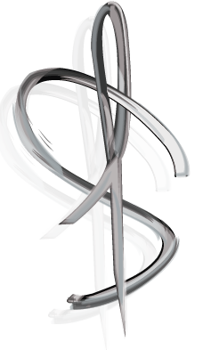

HCD Kit · EmpatizarMapa de empatíaNo diseñamos para un usuario genérico, sino para alguien concreto. El equipo lo llena en tres movimientos: aportan notas, consolidan las parecidas y las votan para converger en una necesidad. Se guarda solo y se sincroniza.
Cada quien agrega sus notas en cada zona, una idea por nota, desde su dispositivo.
Marcan qué notas pasan y cuáles se parecen entre sí para fusionarlas en una sola opción.
Cada persona reparte 3, 2 y 1 puntos entre las opciones (no puede votar las suyas). Gana la de más puntos.
Pon tu nombre y conéctate (⚙️) para trabajar en equipo en vivo. Tu nombre identifica tus aportes: así la herramienta sabe cuáles no puedes votar.
Una herramienta para ponernos en los zapatos de una persona antes de diseñar. Se parte en seis zonas; cada una responde una pregunta distinta sobre ella. Al final, de ahí sale una necesidad (no una solución).
Lo que sale de ella: frases y acciones que cualquiera notaría.
Lo que no se ve: creencias y emociones. Aquí se empatiza de verdad.
Qué le estorba y qué desea. De los dolores más votados sale la necesidad.
Empatizar es más fácil con un momento específico. Léanlo, imagínenlo y empaticen con esa duda. Pueden ajustarlo en equipo.
Se guarda y se sincroniza con el equipo.
Antes de votar, depuren cada zona: desmarquen “pasa” lo que esté fuera de tema y, si dos notas dicen lo mismo, marquen en una que se parece a la otra para fusionarlas en una sola opción. Así se vota sobre ideas distintas, no repetidas.
En cada zona das 3, 2 y 1 punto a tres opciones distintas. No puedes votar tus propias aportaciones, ni dar el mismo puntaje dos veces. Para mover un punto, libéralo con ✕.
Lo más votado por zona, y de ahí la herramienta arma el punto de vista: la necesidad y su porqué. Es el puente al taller de “Aterrizar el reto”.